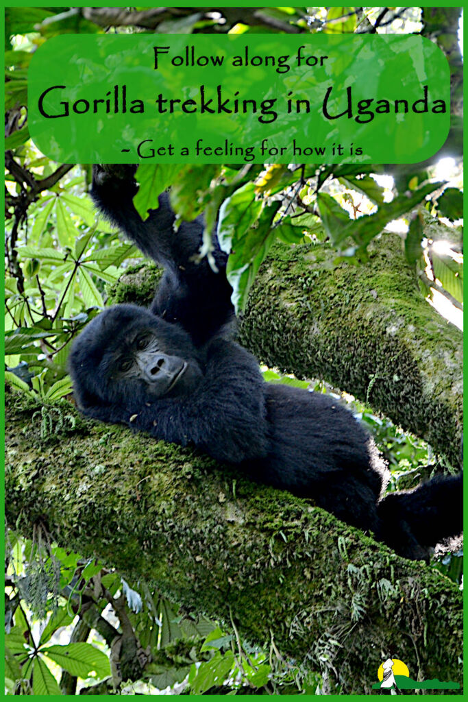

Top 10 Tips for an Unforgettable Gorilla Trekking Experience
From packing essentials to trekking etiquette, here's everything you need to know before heading into Bwindi Impenetrable Forest to see the majestic mountain gorillas.
1. Book Your Permit Early — Gorilla trekking permits are limited to 8 per group per day. Book at least 3 months in advance through the Uganda Wildlife Authority.
2. Pack Right — Wear long pants, a long-sleeved shirt, sturdy hiking boots, and gaiters. Bring rain gear, sunscreen, and insect repellent.
3. Hire a Porter — Porters are local community members who carry your bag and help you through steep terrain. It supports the local economy.
4. Stay Hydrated — Carry at least 2 litres of water. The trek can last 2-6 hours in humid forest conditions.
5. Follow Your Guide — Listen carefully to the briefing. Stay with your group and maintain a 7-metre distance from the gorillas.
6. No Flash Photography — Flash can disturb the gorillas. Use a high-ISO setting or low-light mode on your camera.
7. Keep Voices Low — Gorillas are calm animals. Keep your voice to a whisper to avoid startling them.
8. Don't Eat or Drink Near Them — Eating or drinking near gorillas can transfer human diseases to which they have no immunity.
9. Prepare Physically — The trek involves steep, muddy slopes at altitudes above 2,500m. Some cardio training before your trip helps a lot.
10. Enjoy the Moment — You get exactly one hour with the gorillas. Put your camera down for a moment and just soak it in.
— Nexdo Adventours Ltd